pacman::p_load(sf, tmap, kableExtra, tidyverse, sfdep, readxl, plyr, Kendall, plotly)Take Home Exercise 2
Take-home Exercise 2: Spatio-temporal Analysis of COVID-19 Vaccination Trends at the Sub-district Level, DKI Jakarta
Setting the Scene
Since late December 2019, an outbreak of a novel coronavirus disease (COVID-19; previously known as 2019-nCoV) was reported in Wuhan, China, which had subsequently affected 210 countries worldwide. In general, COVID-19 is an acute resolved disease but it can also be deadly, with a 2% case fatality rate.
The COVID-19 vaccination in Indonesia is an ongoing mass immunisation in response to the COVID-19 pandemic in Indonesia. On 13 January 2021, the program commenced when President Joko Widodo was vaccinated at the presidential palace. In terms of total doses given, Indonesia ranks third in Asia and fifth in the world.
According to wikipedia, as of 5 February 2023 at 18:00 WIB (UTC+7), 204,266,655 people had received the first dose of the vaccine and 175,131,893 people had been fully vaccinated; 69,597,474 of them had been inoculated with the booster or the third dose, while 1,585,164 had received the fourth dose. Jakarta has the highest percentage of population fully vaccinated with 103.46%, followed by Bali and Special Region of Yogyakarta with 85.45% and 83.02% respectively.
Despite its compactness, the cumulative vaccination rate are not evenly distributed within DKI Jakarta. The question is where are the sub-districts with relatively higher number of vaccination rate and how they changed over time.
Objectives
Exploratory Spatial Data Analysis (ESDA) hold tremendous potential to address complex problems facing society. In this study, you are tasked to apply appropriate Local Indicators of Spatial Association (LISA) and Emerging Hot Spot Analysis (EHSA) to undercover the spatio-temporal trends of COVID-19 vaccination in DKI Jakarta.
f## The Task
The specific tasks of this take-home exercise are as follows:
Choropleth Mapping and Analysis
Compute the monthly vaccination rate from July 2021 to June 2022 at sub-district (also known as kelurahan in Bahasa Indonesia) level,
Prepare the monthly vaccination rate maps by using appropriate tmap functions,
Describe the spatial patterns revealed by the choropleth maps (not more than 200 words).
Local Gi* Analysis
With reference to the vaccination rate maps prepared in ESDA:
Compute local Gi* values of the monthly vaccination rate,
Display the Gi* maps of the monthly vaccination rate. The maps should only display the significant (i.e. p-value < 0.05)
With reference to the analysis results, draw statistical conclusions (not more than 250 words).
Emerging Hot Spot Analysis (EHSA)
With reference to the local Gi* values of the vaccination rate maps prepared in the previous section:
Perform Mann-Kendall Test by using the spatio-temporal local Gi* values,
Select three sub-districts and describe the temporal trends revealed (not more than 250 words), and
Prepared a EHSA map of the Gi* values of vaccination rate. The maps should only display the significant (i.e. p-value < 0.05).
With reference to the EHSA map prepared, describe the spatial patterns revealed. (not more than 250 words).
The Data
Aspatial data
For the purpose of this assignment, data from Riwayat File Vaksinasi DKI Jakarta will be used. Daily vaccination data are provides. You are only required to download either the first day of the month or last day of the month of the study period.
Geospatial data
For the purpose of this study, DKI Jakarta administration boundary 2019 will be used. The data set can be downloaded at Indonesia Geospatial portal, specifically at this page.
Note
The national Projected Coordinates Systems of Indonesia is DGN95 / Indonesia TM-3 zone 54.1.
Exclude all the outer islands from the DKI Jakarta sf data frame, and
Retain the first nine fields in the DKI Jakarta sf data frame. The ninth field JUMLAH_PEN = Total Population.
Reference was taken from the senior sample submissions for the code for this section, with credit to Megan - https://is415-msty.netlify.app/posts/2021-09-10-take-home-exercise-1/
1. Installing and Loading R packages
In this take home exercise 2, 9 packages will used and loaded using pacman.
1.1 Importing the Geospatial Data
The code chunk below uses st_read() of sf package to import BATAS_DESA_DESEMBER_2019_DUKCAPIL_DKI_JAKARTA shapefile into R. The imported shapefile will be simple features Object of sf. As we can see, the assigned coordinates system is WGS 84, the ‘World Geodetic System 1984’. In the context of this dataset, this isn’t appropriate: as this is an Indonesian-specific geospatial dataset, we should be using the national CRS of Indonesia, DGN95, the ‘Datum Geodesi Nasional 1995’, ESPG code 23845. st_transform will be used to rectify the coordinate system
bd_jakarta <- st_read(dsn = "Data/Geospatial",
layer = "BATAS_DESA_DESEMBER_2019_DUKCAPIL_DKI_JAKARTA")Reading layer `BATAS_DESA_DESEMBER_2019_DUKCAPIL_DKI_JAKARTA' from data source
`C:\Users\kwekm\Desktop\SMU Year 3 Semester 2\IS415 Geospatial Analytics and Applications\KMRCrazyDuck\IS415-KMR\Take_home_ex\Data\Geospatial'
using driver `ESRI Shapefile'
Simple feature collection with 269 features and 161 fields
Geometry type: MULTIPOLYGON
Dimension: XY
Bounding box: xmin: 106.3831 ymin: -6.370815 xmax: 106.9728 ymax: -5.184322
Geodetic CRS: WGS 84From the output message we can see that there are 269 features and 161 fields. The assigned CRS is WGS 84, the ‘World Geodetic System 1984’. This is not right, and will be rectify that later.
1.2 Data Pre-Processing
1.2.1 Check for Missing Values
Now lets check if there are any missing values
bd_jakarta[rowSums(is.na(bd_jakarta))!=0,]Simple feature collection with 2 features and 161 fields
Geometry type: MULTIPOLYGON
Dimension: XY
Bounding box: xmin: 106.8412 ymin: -6.154036 xmax: 106.8612 ymax: -6.144973
Geodetic CRS: WGS 84
OBJECT_ID KODE_DESA DESA KODE PROVINSI KAB_KOTA KECAMATAN
243 25645 31888888 DANAU SUNTER 318888 DKI JAKARTA <NA> <NA>
244 25646 31888888 DANAU SUNTER DLL 318888 DKI JAKARTA <NA> <NA>
DESA_KELUR JUMLAH_PEN JUMLAH_KK LUAS_WILAY KEPADATAN PERPINDAHA JUMLAH_MEN
243 <NA> 0 0 0 0 0 0
244 <NA> 0 0 0 0 0 0
PERUBAHAN WAJIB_KTP SILAM KRISTEN KHATOLIK HINDU BUDHA KONGHUCU KEPERCAYAA
243 0 0 0 0 0 0 0 0 0
244 0 0 0 0 0 0 0 0 0
PRIA WANITA BELUM_KAWI KAWIN CERAI_HIDU CERAI_MATI U0 U5 U10 U15 U20 U25
243 0 0 0 0 0 0 0 0 0 0 0 0
244 0 0 0 0 0 0 0 0 0 0 0 0
U30 U35 U40 U45 U50 U55 U60 U65 U70 U75 TIDAK_BELU BELUM_TAMA TAMAT_SD SLTP
243 0 0 0 0 0 0 0 0 0 0 0 0 0 0
244 0 0 0 0 0 0 0 0 0 0 0 0 0 0
SLTA DIPLOMA_I DIPLOMA_II DIPLOMA_IV STRATA_II STRATA_III BELUM_TIDA
243 0 0 0 0 0 0 0
244 0 0 0 0 0 0 0
APARATUR_P TENAGA_PEN WIRASWASTA PERTANIAN NELAYAN AGAMA_DAN PELAJAR_MA
243 0 0 0 0 0 0 0
244 0 0 0 0 0 0 0
TENAGA_KES PENSIUNAN LAINNYA GENERATED KODE_DES_1 BELUM_ MENGUR_ PELAJAR_
243 0 0 0 <NA> <NA> 0 0 0
244 0 0 0 <NA> <NA> 0 0 0
PENSIUNA_1 PEGAWAI_ TENTARA KEPOLISIAN PERDAG_ PETANI PETERN_ NELAYAN_1
243 0 0 0 0 0 0 0 0
244 0 0 0 0 0 0 0 0
INDUSTR_ KONSTR_ TRANSP_ KARYAW_ KARYAW1 KARYAW1_1 KARYAW1_12 BURUH BURUH_
243 0 0 0 0 0 0 0 0 0
244 0 0 0 0 0 0 0 0 0
BURUH1 BURUH1_1 PEMBANT_ TUKANG TUKANG_1 TUKANG_12 TUKANG__13 TUKANG__14
243 0 0 0 0 0 0 0 0
244 0 0 0 0 0 0 0 0
TUKANG__15 TUKANG__16 TUKANG__17 PENATA PENATA_ PENATA1_1 MEKANIK SENIMAN_
243 0 0 0 0 0 0 0 0
244 0 0 0 0 0 0 0 0
TABIB PARAJI_ PERANCA_ PENTER_ IMAM_M PENDETA PASTOR WARTAWAN USTADZ JURU_M
243 0 0 0 0 0 0 0 0 0 0
244 0 0 0 0 0 0 0 0 0 0
PROMOT ANGGOTA_ ANGGOTA1 ANGGOTA1_1 PRESIDEN WAKIL_PRES ANGGOTA1_2
243 0 0 0 0 0 0 0
244 0 0 0 0 0 0 0
ANGGOTA1_3 DUTA_B GUBERNUR WAKIL_GUBE BUPATI WAKIL_BUPA WALIKOTA WAKIL_WALI
243 0 0 0 0 0 0 0 0
244 0 0 0 0 0 0 0 0
ANGGOTA1_4 ANGGOTA1_5 DOSEN GURU PILOT PENGACARA_ NOTARIS ARSITEK AKUNTA_
243 0 0 0 0 0 0 0 0 0
244 0 0 0 0 0 0 0 0 0
KONSUL_ DOKTER BIDAN PERAWAT APOTEK_ PSIKIATER PENYIA_ PENYIA1 PELAUT
243 0 0 0 0 0 0 0 0 0
244 0 0 0 0 0 0 0 0 0
PENELITI SOPIR PIALAN PARANORMAL PEDAGA_ PERANG_ KEPALA_ BIARAW_ WIRASWAST_
243 0 0 0 0 0 0 0 0 0
244 0 0 0 0 0 0 0 0 0
LAINNYA_12 LUAS_DESA KODE_DES_3 DESA_KEL_1 KODE_12
243 0 0 <NA> <NA> 0
244 0 0 <NA> <NA> 0
geometry
243 MULTIPOLYGON (((106.8612 -6...
244 MULTIPOLYGON (((106.8504 -6...There are 2 rows containing ‘NA’ values. However, the data is big, we need to find columns with missing NA values to remove it.
names(which(colSums(is.na(bd_jakarta))>0))[1] "KAB_KOTA" "KECAMATAN" "DESA_KELUR" "GENERATED" "KODE_DES_1"
[6] "KODE_DES_3" "DESA_KEL_1"We can see that there are two particular rows with missing values for KAB_KOTA (City), KECAMATAN (District) and DESA_KELUR (Village).
Hence, we remove rows with NA value in DESA_KELUR. There are other columns with NA present as well, however, since we are only looking at the sub-district level, it is most appropriate to remove DESA_KELUR.
bd_jakarta <- na.omit(bd_jakarta,c("DESA_KELUR"))To double check if the rows with missing values are removed
bd_jakarta[rowSums(is.na(bd_jakarta))!=0,]Simple feature collection with 0 features and 161 fields
Bounding box: xmin: NA ymin: NA xmax: NA ymax: NA
Geodetic CRS: WGS 84
[1] OBJECT_ID KODE_DESA DESA KODE PROVINSI KAB_KOTA
[7] KECAMATAN DESA_KELUR JUMLAH_PEN JUMLAH_KK LUAS_WILAY KEPADATAN
[13] PERPINDAHA JUMLAH_MEN PERUBAHAN WAJIB_KTP SILAM KRISTEN
[19] KHATOLIK HINDU BUDHA KONGHUCU KEPERCAYAA PRIA
[25] WANITA BELUM_KAWI KAWIN CERAI_HIDU CERAI_MATI U0
[31] U5 U10 U15 U20 U25 U30
[37] U35 U40 U45 U50 U55 U60
[43] U65 U70 U75 TIDAK_BELU BELUM_TAMA TAMAT_SD
[49] SLTP SLTA DIPLOMA_I DIPLOMA_II DIPLOMA_IV STRATA_II
[55] STRATA_III BELUM_TIDA APARATUR_P TENAGA_PEN WIRASWASTA PERTANIAN
[61] NELAYAN AGAMA_DAN PELAJAR_MA TENAGA_KES PENSIUNAN LAINNYA
[67] GENERATED KODE_DES_1 BELUM_ MENGUR_ PELAJAR_ PENSIUNA_1
[73] PEGAWAI_ TENTARA KEPOLISIAN PERDAG_ PETANI PETERN_
[79] NELAYAN_1 INDUSTR_ KONSTR_ TRANSP_ KARYAW_ KARYAW1
[85] KARYAW1_1 KARYAW1_12 BURUH BURUH_ BURUH1 BURUH1_1
[91] PEMBANT_ TUKANG TUKANG_1 TUKANG_12 TUKANG__13 TUKANG__14
[97] TUKANG__15 TUKANG__16 TUKANG__17 PENATA PENATA_ PENATA1_1
[103] MEKANIK SENIMAN_ TABIB PARAJI_ PERANCA_ PENTER_
[109] IMAM_M PENDETA PASTOR WARTAWAN USTADZ JURU_M
[115] PROMOT ANGGOTA_ ANGGOTA1 ANGGOTA1_1 PRESIDEN WAKIL_PRES
[121] ANGGOTA1_2 ANGGOTA1_3 DUTA_B GUBERNUR WAKIL_GUBE BUPATI
[127] WAKIL_BUPA WALIKOTA WAKIL_WALI ANGGOTA1_4 ANGGOTA1_5 DOSEN
[133] GURU PILOT PENGACARA_ NOTARIS ARSITEK AKUNTA_
[139] KONSUL_ DOKTER BIDAN PERAWAT APOTEK_ PSIKIATER
[145] PENYIA_ PENYIA1 PELAUT PENELITI SOPIR PIALAN
[151] PARANORMAL PEDAGA_ PERANG_ KEPALA_ BIARAW_ WIRASWAST_
[157] LAINNYA_12 LUAS_DESA KODE_DES_3 DESA_KEL_1 KODE_12 geometry
<0 rows> (or 0-length row.names)1.2.2 Transforming Coordinates
Previously as mentioned it uses the WGS 84 coordinate system. The data is using a Geographic projected system, however, this is system is not appropriate since we need to use distance and area measures.
st_crs(bd_jakarta)Coordinate Reference System:
User input: WGS 84
wkt:
GEOGCRS["WGS 84",
DATUM["World Geodetic System 1984",
ELLIPSOID["WGS 84",6378137,298.257223563,
LENGTHUNIT["metre",1]]],
PRIMEM["Greenwich",0,
ANGLEUNIT["degree",0.0174532925199433]],
CS[ellipsoidal,2],
AXIS["latitude",north,
ORDER[1],
ANGLEUNIT["degree",0.0174532925199433]],
AXIS["longitude",east,
ORDER[2],
ANGLEUNIT["degree",0.0174532925199433]],
ID["EPSG",4326]]Therefore, we use st_transform() and not st_set_crs() as st_set_crs() assigns the EPSG code to the data frame. And we need to transform the data frame from geographic to projected coordinate system. We will be using crs=23845 (found from the EPSG for Indonesia).
bd_jakarta <- st_transform(bd_jakarta, 23845)Check if CRS has been assigned
st_crs(bd_jakarta)Coordinate Reference System:
User input: EPSG:23845
wkt:
PROJCRS["DGN95 / Indonesia TM-3 zone 54.1",
BASEGEOGCRS["DGN95",
DATUM["Datum Geodesi Nasional 1995",
ELLIPSOID["WGS 84",6378137,298.257223563,
LENGTHUNIT["metre",1]]],
PRIMEM["Greenwich",0,
ANGLEUNIT["degree",0.0174532925199433]],
ID["EPSG",4755]],
CONVERSION["Indonesia TM-3 zone 54.1",
METHOD["Transverse Mercator",
ID["EPSG",9807]],
PARAMETER["Latitude of natural origin",0,
ANGLEUNIT["degree",0.0174532925199433],
ID["EPSG",8801]],
PARAMETER["Longitude of natural origin",139.5,
ANGLEUNIT["degree",0.0174532925199433],
ID["EPSG",8802]],
PARAMETER["Scale factor at natural origin",0.9999,
SCALEUNIT["unity",1],
ID["EPSG",8805]],
PARAMETER["False easting",200000,
LENGTHUNIT["metre",1],
ID["EPSG",8806]],
PARAMETER["False northing",1500000,
LENGTHUNIT["metre",1],
ID["EPSG",8807]]],
CS[Cartesian,2],
AXIS["easting (X)",east,
ORDER[1],
LENGTHUNIT["metre",1]],
AXIS["northing (Y)",north,
ORDER[2],
LENGTHUNIT["metre",1]],
USAGE[
SCOPE["Cadastre."],
AREA["Indonesia - onshore east of 138°E."],
BBOX[-9.19,138,-1.49,141.01]],
ID["EPSG",23845]]1.2.3 Removal of the Outer Island
We have done our basic pre-processing, lets quickly visualize the data
plot(st_geometry(bd_jakarta))
As we can see from the diagram, bd_jakarta includes both mainland and outer islands. And since we don’t require the outer islands (as per the requirements), we can remove them.
We know that the date is grouped by KAB_KOTA (City), KECAMATAN (Sub-District) and DESA_KELUR (Village). Now, lets plot the map and see how we can use KAB_KOTA to remove the outer islands.
tm_shape(bd_jakarta) +
tm_polygons("KAB_KOTA")
From the map, we can see that all the cities in Jakarta start with ‘Jakarta’ as their prefix and hence, ‘Kepulauan Seribu’ are the other outer islands. When translated in English, the name means ‘Thousand Islands’. Now we know what to remove, and we shall proceed with that.
bd_jakarta <- filter(bd_jakarta, KAB_KOTA != "KEPULAUAN SERIBU")Now, lets double check if the outer islands have been removed.
tm_shape(bd_jakarta) +
tm_polygons("KAB_KOTA")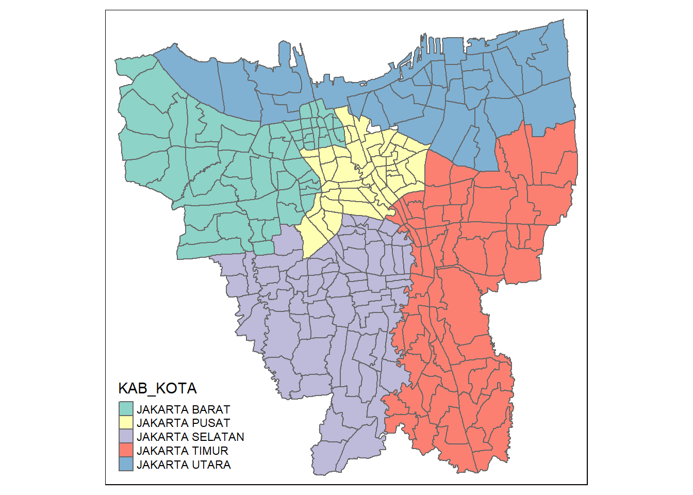
1.2.4 To retain the first 9 columns as requested
bd_jakarta <- bd_jakarta[, 0:9]1.2.5 Renaming columns to English
bd_jakarta <- bd_jakarta %>%
dplyr::rename(
Object_ID=OBJECT_ID,
Village_Code=KODE_DESA,
Village=DESA,
Code=KODE,
Province=PROVINSI,
City=KAB_KOTA,
District=KECAMATAN,
Sub_District=DESA_KELUR,
Total_Population=JUMLAH_PEN
)2. Data Wrangling for Aspatial Data
2.1 Importing EDA
For this take home exercise 2, we will be working on data from July 2021 to June 2022, as a result we will be having several excel files.
jul2021 <- read_xlsx("Data/Aspatial/Data Vaksinasi Berbasis Kelurahan (31 Juli 2021).xlsx")
glimpse(jul2021)Rows: 268
Columns: 27
$ `KODE KELURAHAN` <chr> NA, "3172051003", "317304…
$ `WILAYAH KOTA` <chr> NA, "JAKARTA UTARA", "JAK…
$ KECAMATAN <chr> NA, "PADEMANGAN", "TAMBOR…
$ KELURAHAN <chr> "TOTAL", "ANCOL", "ANGKE"…
$ SASARAN <dbl> 8941211, 23947, 29381, 29…
$ `BELUM VAKSIN` <dbl> 4441501, 12333, 13875, 18…
$ `JUMLAH\r\nDOSIS 1` <dbl> 4499710, 11614, 15506, 10…
$ `JUMLAH\r\nDOSIS 2` <dbl> 1663218, 4181, 4798, 3658…
$ `TOTAL VAKSIN\r\nDIBERIKAN` <dbl> 6162928, 15795, 20304, 14…
$ `LANSIA\r\nDOSIS 1` <dbl> 502579, 1230, 2012, 865, …
$ `LANSIA\r\nDOSIS 2` <dbl> 440910, 1069, 1729, 701, …
$ `LANSIA TOTAL \r\nVAKSIN DIBERIKAN` <dbl> 943489, 2299, 3741, 1566,…
$ `PELAYAN PUBLIK\r\nDOSIS 1` <dbl> 1052883, 3333, 2586, 2837…
$ `PELAYAN PUBLIK\r\nDOSIS 2` <dbl> 666009, 2158, 1374, 1761,…
$ `PELAYAN PUBLIK TOTAL\r\nVAKSIN DIBERIKAN` <dbl> 1718892, 5491, 3960, 4598…
$ `GOTONG ROYONG\r\nDOSIS 1` <dbl> 56660, 78, 122, 174, 71, …
$ `GOTONG ROYONG\r\nDOSIS 2` <dbl> 38496, 51, 84, 106, 57, 7…
$ `GOTONG ROYONG TOTAL\r\nVAKSIN DIBERIKAN` <dbl> 95156, 129, 206, 280, 128…
$ `TENAGA KESEHATAN\r\nDOSIS 1` <dbl> 76397, 101, 90, 215, 73, …
$ `TENAGA KESEHATAN\r\nDOSIS 2` <dbl> 67484, 91, 82, 192, 67, 3…
$ `TENAGA KESEHATAN TOTAL\r\nVAKSIN DIBERIKAN` <dbl> 143881, 192, 172, 407, 14…
$ `TAHAPAN 3\r\nDOSIS 1` <dbl> 2279398, 5506, 9012, 5408…
$ `TAHAPAN 3\r\nDOSIS 2` <dbl> 446028, 789, 1519, 897, 4…
$ `TAHAPAN 3 TOTAL\r\nVAKSIN DIBERIKAN` <dbl> 2725426, 6295, 10531, 630…
$ `REMAJA\r\nDOSIS 1` <dbl> 531793, 1366, 1684, 1261,…
$ `REMAJA\r\nDOSIS 2` <dbl> 4291, 23, 10, 1, 1, 8, 6,…
$ `REMAJA TOTAL\r\nVAKSIN DIBERIKAN` <dbl> 536084, 1389, 1694, 1262,…From opening up the excel file till February 2022, the number of columns is 27. However, from March 2022 the number of columns is 34. Upon identifying the difference between the number of columns, the data files from March 2022 has a separate column for 3rd dosage, where has all the data files before that don’t have 3rd dosage column.
2.2 Creating Aspatial Data Pre-Processing Function
For take home exercise 2, we don’t require all the columns. Only the following columns are required -
KODE KELURAHAN (Sub-District Code)
KELURAHAN (Sub-District)
SASARAN (Target)
BELUM VASKIN (Yet to be vaccinated / Not yet vaccinated)
This solves the issue of some months having extra columns. However, we need to create an ‘Date’ column that shows the month and year of the observation, which is originally the file name. Each file has the naming convention ’Data Vaksinasi Berbasis Keluarahan (DD Month YYYY).
We will be combining the mentioned steps into a function
# takes in an aspatial data filepath and returns a processed output
aspatial_preprocess <- function(filepath){
# We have to remove the first row of the file (subheader row) and hence, we use [-1,] to remove it.
result_file <- read_xlsx(filepath)[-1,]
# We then create the Date Column, the format of our files is: Data Vaksinasi Berbasis Kelurahan (DD Month YYYY)
# While the start is technically "(", "(" is part of a regular expression and leads to a warning message, so we'll use "Kelurahan" instead. The [[1]] refers to the first element in the list.
# We're loading it as DD-Month-YYYY format
# We use the length of the filepath '6' to get the end index (which has our Date)
# as such, the most relevant functions are substr (returns a substring) and either str_locate (returns location of substring as an integer matrix) or gregexpr (returns a list of locations of substring)
# reference https://stackoverflow.com/questions/14249562/find-the-location-of-a-character-in-string
startpoint <- gregexpr(pattern="Kelurahan", filepath)[[1]] + 11
result_file$Date <- substr(filepath, startpoint, nchar(filepath)-6)
# Retain the Relevant Columns
result_file <- result_file %>%
select("Date",
"KODE KELURAHAN",
"KELURAHAN",
"SASARAN",
"BELUM VAKSIN")
return(result_file)
}2.3 Feed files into Aspatial function
Instead of manually feeding the files, line by line, we will be using the function list.files() and lapply() to get our process done quicker.
# in the folder 'data/aspatial', find files with the extension '.xlsx' and add it to our fileslist
# the full.names=TRUE prepends the directory path to the file names, giving a relative file path - otherwise, only the file names (not the paths) would be returned
# reference: https://stat.ethz.ch/R-manual/R-devel/library/base/html/list.files.html
fileslist <-list.files(path = "data/aspatial", pattern = "*.xlsx", full.names=TRUE)
# afterwards, for every element in fileslist, apply aspatial_process function
dflist <- lapply(seq_along(fileslist), function(x) aspatial_preprocess(fileslist[x]))We will then convert the dflist into an actual dataframe with ldply() using the below code
vaccination_jakarta <- ldply(dflist, data.frame)Now, lets take a look into our data
glimpse(vaccination_jakarta)Rows: 3,204
Columns: 5
$ Date <chr> "27 Februari 2022", "27 Februari 2022", "27 Februari 20…
$ KODE.KELURAHAN <chr> "3172051003", "3173041007", "3175041005", "3175031003",…
$ KELURAHAN <chr> "ANCOL", "ANGKE", "BALE KAMBANG", "BALI MESTER", "BAMBU…
$ SASARAN <dbl> 23947, 29381, 29074, 9752, 26285, 21566, 23886, 47898, …
$ BELUM.VAKSIN <dbl> 4592, 5319, 5903, 1649, 4030, 3950, 3344, 9382, 3772, 7…2.4 Formatting Date Column
The Dates are in Bahasa Indonesia, and hence, we need to translate them to English for ease of use. However, since the values in Date column were derived from sub-strings, they are in a string format and thus, first need to be converted to datetime.
# parses the 'Date' column into Month(Full Name)-YYYY datetime objects
# reference: https://stackoverflow.com/questions/53380650/b-y-date-conversion-gives-na
# locale="ind" means that the locale has been set as Indonesia
Sys.setlocale(locale="ind")[1] "LC_COLLATE=Indonesian_Indonesia.1252;LC_CTYPE=Indonesian_Indonesia.1252;LC_MONETARY=Indonesian_Indonesia.1252;LC_NUMERIC=C;LC_TIME=Indonesian_Indonesia.1252"vaccination_jakarta$Date <- c(vaccination_jakarta$Date) %>%
as.Date(vaccination_jakarta$Date, format ="%d %B %Y")
glimpse(vaccination_jakarta)Rows: 3,204
Columns: 5
$ Date <date> 2022-02-27, 2022-02-27, 2022-02-27, 2022-02-27, 2022-0~
$ KODE.KELURAHAN <chr> "3172051003", "3173041007", "3175041005", "3175031003",~
$ KELURAHAN <chr> "ANCOL", "ANGKE", "BALE KAMBANG", "BALI MESTER", "BAMBU~
$ SASARAN <dbl> 23947, 29381, 29074, 9752, 26285, 21566, 23886, 47898, ~
$ BELUM.VAKSIN <dbl> 4592, 5319, 5903, 1649, 4030, 3950, 3344, 9382, 3772, 7~2.5 Rename columns into English
# renames the columns in the style New_Name = OLD_NAME
vaccination_jakarta <- vaccination_jakarta %>%
dplyr::rename(
Date=Date,
Sub_District_Code=KODE.KELURAHAN,
Sub_District=KELURAHAN,
Target=SASARAN,
Not_Yet_Vaccinated=BELUM.VAKSIN
)glimpse(vaccination_jakarta)Rows: 3,204
Columns: 5
$ Date <date> 2022-02-27, 2022-02-27, 2022-02-27, 2022-02-27, 20~
$ Sub_District_Code <chr> "3172051003", "3173041007", "3175041005", "31750310~
$ Sub_District <chr> "ANCOL", "ANGKE", "BALE KAMBANG", "BALI MESTER", "B~
$ Target <dbl> 23947, 29381, 29074, 9752, 26285, 21566, 23886, 478~
$ Not_Yet_Vaccinated <dbl> 4592, 5319, 5903, 1649, 4030, 3950, 3344, 9382, 377~2.6 Further data processing
Further perform any pre-processing to check out for anything we might have missed.
vaccination_jakarta[rowSums(is.na(vaccination_jakarta))!=0,][1] Date Sub_District_Code Sub_District Target
[5] Not_Yet_Vaccinated
<0 rows> (or 0-length row.names)From the output, we can see there are no missing values.
3. Geospatial Data Integration
3.1 Initial Exploratory Data Analysis
We have both our Geospatial and Aspatial data, we need to join them. However, we need to first find a common header to join them.
colnames(bd_jakarta) [1] "Object_ID" "Village_Code" "Village" "Code"
[5] "Province" "City" "District" "Sub_District"
[9] "Total_Population" "geometry" colnames(vaccination_jakarta)[1] "Date" "Sub_District_Code" "Sub_District"
[4] "Target" "Not_Yet_Vaccinated"We can see that both have Sub_District and hence we can join them by the Sub_District and Sub_District_Code.
# joins vaccination_jakarta to jakarta based on Sub_District and Sub_District_Code
combined_jakarta <- left_join(bd_jakarta, vaccination_jakarta,
by=c(
"Village_Code"="Sub_District_Code",
"Sub_District"="Sub_District")
)Subcategorize the data into ‘Target population to be Vaccinated’ , ‘Not Yet Vaccinated Population’ and ‘Total Population’
target = tm_shape(combined_jakarta)+
tm_fill("Target") +
tm_borders(alpha = 0.5) +
tm_layout(main.title="Target Count")
not_yet_vaccinated = tm_shape(combined_jakarta)+
tm_fill("Not_Yet_Vaccinated") +
tm_borders(alpha = 0.5) +
tm_layout(main.title="Not Yet Vaccinated Count")
total_population = tm_shape(combined_jakarta)+
tm_fill("Total_Population") +
tm_borders(alpha = 0.5) +
tm_layout(main.title="Total Population")
tmap_arrange(target, not_yet_vaccinated, total_population)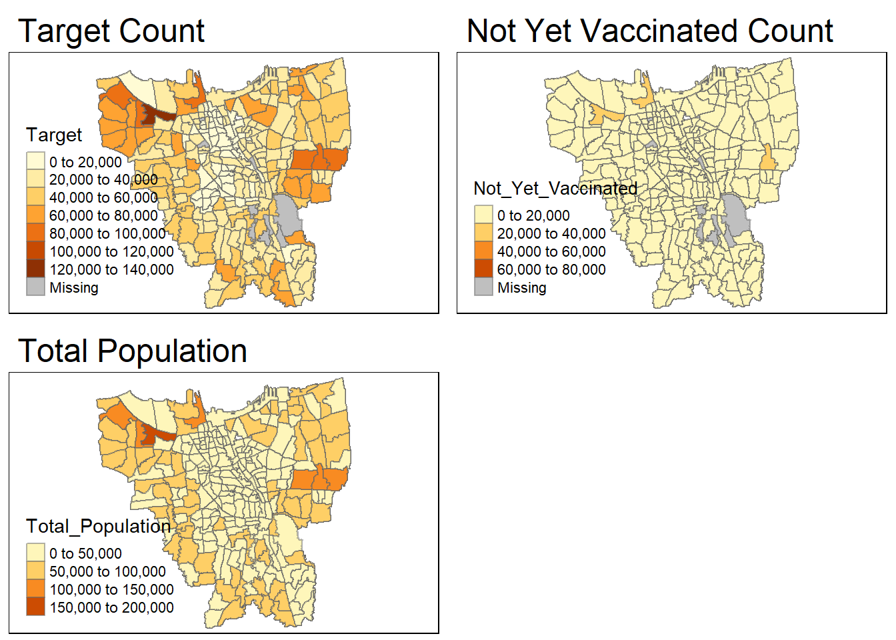
There seems to be still be a ‘Missing’ value in the Target and Not_Yet_Vaccinated maps. Even though, when we had previously checked for missing values, it didn’t show any missing values. However, we shall double check again.
bd_jakarta[rowSums(is.na(bd_jakarta))!=0,]Simple feature collection with 0 features and 9 fields
Bounding box: xmin: NA ymin: NA xmax: NA ymax: NA
Projected CRS: DGN95 / Indonesia TM-3 zone 54.1
[1] Object_ID Village_Code Village Code
[5] Province City District Sub_District
[9] Total_Population geometry
<0 rows> (or 0-length row.names)vaccination_jakarta[rowSums(is.na(vaccination_jakarta))!=0,][1] Date Sub_District_Code Sub_District Target
[5] Not_Yet_Vaccinated
<0 rows> (or 0-length row.names)There are no missing values in our dataframes. Therefore, the most likely reasons for the missing values must be due to mismatched values when we perform the left-join of the Geospatial and Aspatial data.
3.2 Finding mismatched sub-district records
Since, we had conducted left-join using the Sub-District, there must be a mismatch in the naming of the subdistricts. Lets check it by looking at the unique subdistrict names in both bd_jakarta and vaccination_jakarta
jakarta_subdistrict <- c(bd_jakarta$Sub_District)
vaccination_subdistrict <- c(vaccination_jakarta$Sub_District)
unique(jakarta_subdistrict[!(jakarta_subdistrict %in% vaccination_subdistrict)])[1] "KRENDANG" "RAWAJATI" "TENGAH"
[4] "BALEKAMBANG" "PINANGRANTI" "JATIPULO"
[7] "PALMERIAM" "KRAMATJATI" "HALIM PERDANA KUSUMA"unique(vaccination_subdistrict[!(vaccination_subdistrict %in% jakarta_subdistrict)]) [1] "BALE KAMBANG" "HALIM PERDANA KUSUMAH" "JATI PULO"
[4] "KAMPUNG TENGAH" "KERENDANG" "KRAMAT JATI"
[7] "PAL MERIAM" "PINANG RANTI" "PULAU HARAPAN"
[10] "PULAU KELAPA" "PULAU PANGGANG" "PULAU PARI"
[13] "PULAU TIDUNG" "PULAU UNTUNG JAWA" "RAWA JATI" From above there are same names in both but are just written in different ways. However, there are 6 words in the vaccination_subdistrict which are not in the jakarta_subdistrict. We need to take a look into that after we first correct the mismatched values.
# initialise a dataframe of our cases vs bd subdistrict spelling
spelling <- data.frame(
Aspatial_Cases=c("BALE KAMBANG", "HALIM PERDANA KUSUMAH", "JATI PULO", "KAMPUNG TENGAH", "KERENDANG", "KRAMAT JATI", "PAL MERIAM", "PINANG RANTI", "RAWA JATI"),
Geospatial_BD=c("BALEKAMBAG", "HALIM PERDANA KUSUMA", "JATIPULO", "TENGAH", "KRENDANG", "KRAMATJATI", "PALMERIAM", "PINANGRANTI", "RAWAJATI")
)
# with dataframe a input, outputs a kable
library(knitr)
library(kableExtra)
kable(spelling, caption="Mismatched Records") %>%
kable_material("hover", latex_options="scale_down")| Aspatial_Cases | Geospatial_BD |
|---|---|
| BALE KAMBANG | BALEKAMBAG |
| HALIM PERDANA KUSUMAH | HALIM PERDANA KUSUMA |
| JATI PULO | JATIPULO |
| KAMPUNG TENGAH | TENGAH |
| KERENDANG | KRENDANG |
| KRAMAT JATI | KRAMATJATI |
| PAL MERIAM | PALMERIAM |
| PINANG RANTI | PINANGRANTI |
| RAWA JATI | RAWAJATI |
As we can see these records have the same name, except that there is no standardization. Therefore, there is a mismatch between them. Let’s correct this mismatch
# We are replacing the mistmatched values in jakarta with the correct value
bd_jakarta$Sub_District[bd_jakarta$Sub_District == 'BALEKAMBANG'] <- 'BALE KAMBANG'
bd_jakarta$Sub_District[bd_jakarta$Sub_District == 'HALIM PERDANA KUSUMA'] <- 'HALIM PERDANA KUSUMAH'
bd_jakarta$Sub_District[bd_jakarta$Sub_District == 'JATIPULO'] <- 'JATI PULO'
bd_jakarta$Sub_District[bd_jakarta$Sub_District == 'KALI BARU'] <- 'KALIBARU'
bd_jakarta$Sub_District[bd_jakarta$Sub_District == 'TENGAH'] <- 'KAMPUNG TENGAH'
bd_jakarta$Sub_District[bd_jakarta$Sub_District == 'KRAMATJATI'] <- 'KRAMAT JATI'
bd_jakarta$Sub_District[bd_jakarta$Sub_District == 'KRENDANG'] <- 'KERENDANG'
bd_jakarta$Sub_District[bd_jakarta$Sub_District == 'PALMERIAM'] <- 'PAL MERIAM'
bd_jakarta$Sub_District[bd_jakarta$Sub_District == 'PINANGRANTI'] <- 'PINANG RANTI'
bd_jakarta$Sub_District[bd_jakarta$Sub_District == 'RAWAJATI'] <- 'RAWA JATI'There are 6 subdistrict names that we say in vaccination_jakarta which were not present in jakarta. This ideally suggests that these districts are not a part of Jakarta, Therefore we need to remove them.
vaccination_jakarta <- vaccination_jakarta[!(vaccination_jakarta$Sub_District=="PULAU HARAPAN" | vaccination_jakarta$Sub_District=="PULAU KELAPA" | vaccination_jakarta$Sub_District=="PULAU PANGGANG" | vaccination_jakarta$Sub_District=="PULAU PARI" | vaccination_jakarta$Sub_District=="PULAU TIDUNG" | vaccination_jakarta$Sub_District=="PULAU UNTUNG JAWA"), ]3.3 Rejoin Exploratory Data Analysis
# joins vaccination_jakarta to bd_jakarta based on Sub_District and Sub_District_Code
combined_jakarta <- left_join(bd_jakarta, vaccination_jakarta,
by=c(
"Village_Code"="Sub_District_Code",
"Sub_District"="Sub_District")
)Check if there are any further NA values
combined_jakarta[rowSums(is.na(combined_jakarta))!=0,]Simple feature collection with 0 features and 12 fields
Bounding box: xmin: NA ymin: NA xmax: NA ymax: NA
Projected CRS: DGN95 / Indonesia TM-3 zone 54.1
[1] Object_ID Village_Code Village Code
[5] Province City District Sub_District
[9] Total_Population Date Target Not_Yet_Vaccinated
[13] geometry
<0 rows> (or 0-length row.names)Relook the data into ‘Target population to be Vaccinated’ , ‘Not Yet Vaccinated Population’ and ‘Total Population’
target = tm_shape(combined_jakarta)+
tm_fill("Target") +
tm_borders(alpha = 0.5) +
tm_layout(main.title="Target Count")
not_yet_vaccinated = tm_shape(combined_jakarta)+
tm_fill("Not_Yet_Vaccinated") +
tm_borders(alpha = 0.5) +
tm_layout(main.title="Not Yet Vaccinated Count")
total_population = tm_shape(combined_jakarta)+
tm_fill("Total_Population") +
tm_borders(alpha = 0.5) +
tm_layout(main.title="Total Population")
tmap_arrange(target, not_yet_vaccinated, total_population)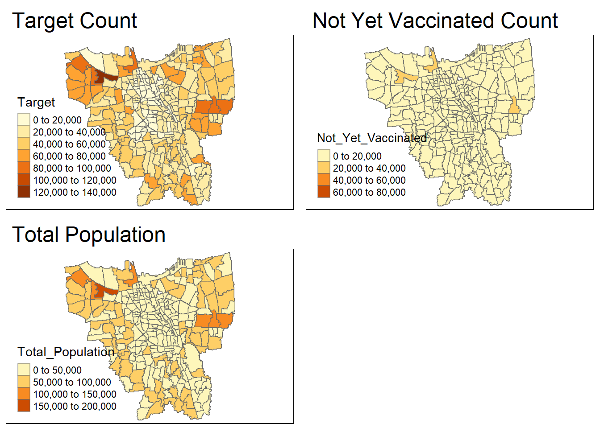
4. Calculation for monthly vaccination rate
We need to compute the monthly vaccination rate in % at the sub-district level.
We use ‘Target’ -SASARAN instead of Population because the government excludes people aged 14 and below for vaccination.
# grouping based on the sub-district and date
vaccination_rate <- vaccination_jakarta %>%
inner_join(bd_jakarta, by=c("Sub_District" = "Sub_District")) %>%
group_by(Sub_District, Date) %>%
dplyr::summarise(`vaccination_rate` = ((Target-Not_Yet_Vaccinated)/Target)*100) %>%
#afterwards, pivots the table based on the Dates, using the cumulative case rate as the values
ungroup() %>% pivot_wider(names_from = Date,
values_from = vaccination_rate)Let us look into how the computation is
vaccination_rate# A tibble: 261 x 13
Sub_District 2021-~1 2021-~2 2021-~3 2021-~4 2021-~5 2021-~6 2022-~7 2022-~8
<chr> <dbl> <dbl> <dbl> <dbl> <dbl> <dbl> <dbl> <dbl>
1 ANCOL 48.5 61.6 72.1 75.0 76.9 78.9 80.6 80.8
2 ANGKE 52.8 64.6 74.2 77.7 79.6 80.9 81.7 81.9
3 BALE KAMBANG 37.0 57.0 70.0 73.9 76.6 78.2 79.5 79.7
4 BALI MESTER 47.0 62.0 74.2 78.2 80.3 81.7 82.8 83.1
5 BAMBU APUS 47.6 64.2 76.2 80.9 82.5 83.4 84.5 84.7
6 BANGKA 51.6 61.3 73.2 78.0 79.8 80.7 81.5 81.7
7 BARU 57.9 67.6 79.5 82.9 84.2 85.0 85.8 86.0
8 BATU AMPAR 39.8 58.4 70.6 74.5 77.1 78.8 80.1 80.4
9 BENDUNGAN HI~ 53.6 62.6 75.6 79.1 80.5 81.4 82.3 82.5
10 BIDARA CINA 40.6 57.6 71.0 75.2 77.0 78.2 79.2 79.5
# ... with 251 more rows, 4 more variables: `2022-03-31` <dbl>,
# `2022-04-30` <dbl>, `2022-05-31` <dbl>, `2022-06-30` <dbl>, and abbreviated
# variable names 1: `2021-07-31`, 2: `2021-08-31`, 3: `2021-09-30`,
# 4: `2021-10-31`, 5: `2021-11-30`, 6: `2021-12-31`, 7: `2022-01-31`,
# 8: `2022-02-27`4.1 Convert dataframe to SF
combined_jakarta <- st_as_sf(combined_jakarta)
# need to join our previous dataframes with the geospatial data to ensure that geometry column is present
vaccination_rate <- vaccination_rate%>% left_join(bd_jakarta, by=c("Sub_District"="Sub_District"))
vaccination_rate <- st_as_sf(vaccination_rate)5 Choropleth Mapping and performing Analysis
There are a few ways to classify data in Choropleth maps such as using Equal Interval, Quantile or Jenks.
For this take home exercise 2, I will be using Jenks as this method uses statistical algorithm to group data into classes in the distribution of values. In addition it suits low variance. As a result it will accurately reflects the distribution of values in the data.
5.1 Jenks Choropleth Mapping
# using the jenks method, with 6 classes for human eye
tmap_mode("plot")
tm_shape(vaccination_rate)+
tm_fill("2021-07-31",
n= 6,
style = "jenks",
title = "Vaccination Rate") +
tm_layout(main.title = "Vaccination Rate in July 2021",
main.title.position = "center",
main.title.size = 1,
legend.height = 0.5,
legend.width = 0.4,
frame = TRUE) +
tm_borders(alpha = 0.5)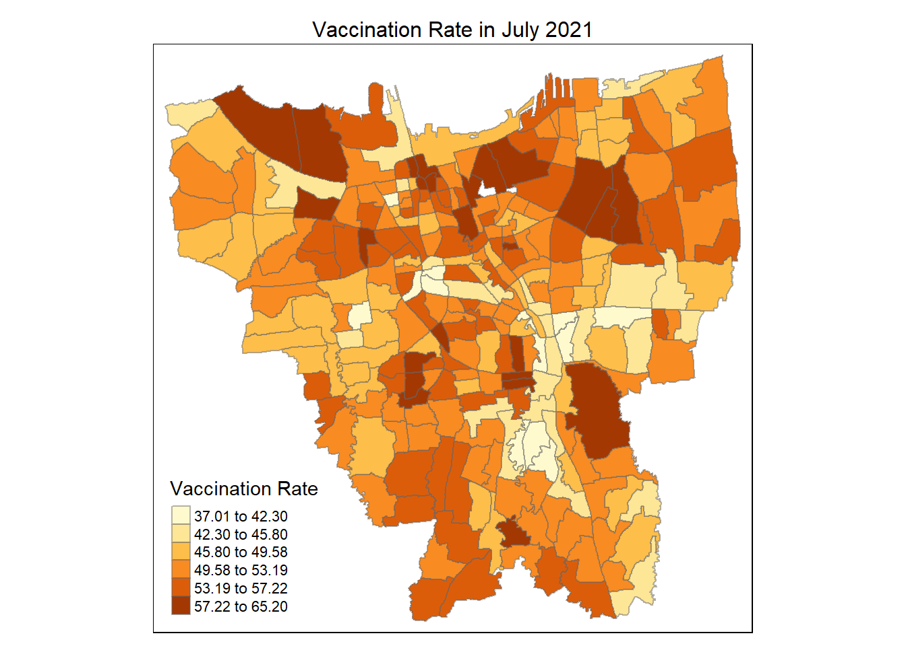
Plot for all 12 months. Adopt a helper function to help us do it.
# input: the dataframe and the variable name - in this case, the month
# with style="jenks" for the jenks classification method
jenks_plot <- function(df, varname) {
tm_shape(vaccination_rate) +
tm_polygons() +
tm_shape(df) +
tm_fill(varname,
n= 6,
style = "jenks",
title = "Vaccination Rate") +
tm_layout(main.title = varname,
main.title.position = "center",
main.title.size = 1.2,
legend.height = 0.45,
legend.width = 0.35,
frame = TRUE) +
tm_borders(alpha = 0.5)
}tmap_mode("plot")
tmap_arrange(jenks_plot(vaccination_rate, "2021-07-31"),
jenks_plot(vaccination_rate, "2021-08-31"),
jenks_plot(vaccination_rate, "2021-09-30"),
jenks_plot(vaccination_rate, "2021-10-31"))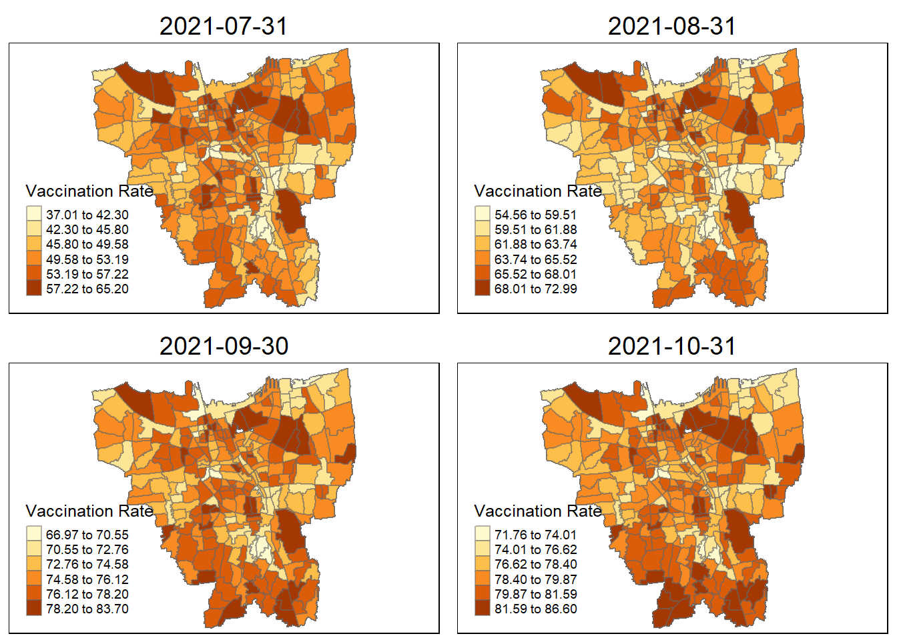
tmap_mode("plot")
tmap_arrange(jenks_plot(vaccination_rate, "2021-11-30"),
jenks_plot(vaccination_rate, "2021-12-31"),
jenks_plot(vaccination_rate, "2022-01-31"),
jenks_plot(vaccination_rate, "2022-02-27"))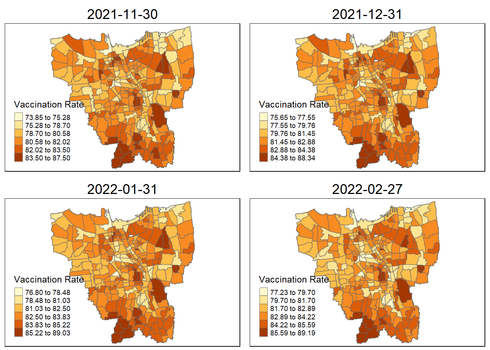
tmap_mode("plot")
tmap_arrange(jenks_plot(vaccination_rate, "2022-03-31"),
jenks_plot(vaccination_rate, "2022-04-30"),
jenks_plot(vaccination_rate, "2022-05-31"),
jenks_plot(vaccination_rate, "2022-06-30"))
Observations from the plotted map
Each map has its own relative vaccination rate: the ranges gradually grow larger over time with the greater number of people getting vaccinated. By comparing the increasing rates over the months, there are a number of observations we can make
In the early stages (July 2021 ~ October 2021), there is a visible darkly-coloured cluster around the north of Jakarta. In the section below, we learned that this is the KAMAL MUARA and HALIM PERDANA KUSUMAH sub-district with the highest vaccination rate.
Between (November 2021 ~ February 2022, other sub districts have darken in colour and the HALIM PERDANA KUSUMAH still remains the sub-district with the highest vaccination rate.
In the later stages of vaccination from March 2022, based on the observation there were more sub-districts with lower vaccination rate (lighter colour). Especially the majority of sub-districts in the North and West seems to have a low vaccination rate in comparison to others. However, HALIM PERDANA KUSUMAH still remains the sub-district with the highest vaccination rate.
Checking for sub-districts with highest vaccination rate according to month
vaccination_rate$Sub_District[which.max(vaccination_rate$`2021-07-31`)][1] "KAMAL MUARA"vaccination_rate$Sub_District[which.max(vaccination_rate$`2021-08-31`)][1] "KAMAL MUARA"vaccination_rate$Sub_District[which.max(vaccination_rate$`2021-09-30`)][1] "HALIM PERDANA KUSUMAH"vaccination_rate$Sub_District[which.max(vaccination_rate$`2021-10-31`)][1] "HALIM PERDANA KUSUMAH"vaccination_rate$Sub_District[which.max(vaccination_rate$`2021-11-30`)][1] "HALIM PERDANA KUSUMAH"vaccination_rate$Sub_District[which.max(vaccination_rate$`2021-12-31`)][1] "HALIM PERDANA KUSUMAH"vaccination_rate$Sub_District[which.max(vaccination_rate$`2022-01-31`)][1] "HALIM PERDANA KUSUMAH"vaccination_rate$Sub_District[which.max(vaccination_rate$`2022-02-27`)][1] "HALIM PERDANA KUSUMAH"vaccination_rate$Sub_District[which.max(vaccination_rate$`2022-03-31`)][1] "HALIM PERDANA KUSUMAH"vaccination_rate$Sub_District[which.max(vaccination_rate$`2022-04-30`)][1] "HALIM PERDANA KUSUMAH"vaccination_rate$Sub_District[which.max(vaccination_rate$`2022-05-31`)][1] "HALIM PERDANA KUSUMAH"vaccination_rate$Sub_District[which.max(vaccination_rate$`2022-06-30`)][1] "HALIM PERDANA KUSUMAH"6. Local GI* Analysis
A Local Gi* Analysis will be conducted. It is also known as local spatial autocorrelation which will be used to identify ideas sub-districts in Jakarta with high or low vaccination rate. Time-series analysis will be conducted to understand the evolution of spatial hot spots and cold spots across time.
Interpretation of Gi* values
Gi∗ > 0 which indicates sub-districts with higher vaccination rate than average
Gi∗ < 0 which indicates sub-districts with higher vaccination rate than average
6.1 Calculation of Local GI* of monthly vaccination rate
# Make new vaccination attribute table with Date, Sub_District, Target, Not_Yet_Vaccinated
vaccination_table <- combined_jakarta %>% select(10, 8, 11, 12) %>% st_drop_geometry()
# Adding a new field for Vaccination_Rate
vaccination_table$Vaccination_Rate <- ((vaccination_table$Target - vaccination_table$Not_Yet_Vaccinated) / vaccination_table$Target) *100
# Vaccination attribute table with just Date, Sub_District, Vaccination_Rate
vaccination_table <- tibble(vaccination_table %>% select(1,2,5))6.2 Create Time Series Cube
vaccination_rate_st <- spacetime(vaccination_table, bd_jakarta,
.loc_col = "Sub_District",
.time_col = "Date")Verify if vaccination_rate_st is indeed a space-time cube by using the is_spacetime_cube() of sfdep package.
is_spacetime_cube(vaccination_rate_st)[1] TRUE6.3 Deriving Spatial Weights
Calculation of local Gi* weights will be done. However, before that we need derive the spatial weights. The below code chunk is used to identify neighbors and derive an inverse distance weights.
vaccination_rate_nb <- vaccination_rate_st %>%
activate("geometry") %>%
mutate(nb = include_self(st_contiguity(geometry)),
wt = st_inverse_distance(nb, geometry,
scale=1,
alpha=1),
.before=1) %>%
set_nbs("nb") %>%
set_wts("wt")Note that
activate()is used to activate the geometry contextmutate()is used to create two new columns nb and wt.Then we will activate the data context again and copy over the nb and wt columns to each time-slice using
set_nbs()andset_wts()- row order is very important so do not rearrange the observations after using
set_nbs()orset_wts().
- row order is very important so do not rearrange the observations after using
The dataset provided has neighbours and weights for each time slicing
head(vaccination_rate_nb)# A tibble: 6 x 5
Date Sub_District Vaccination_Rate nb wt
<date> <chr> <dbl> <list> <list>
1 2021-07-31 KEAGUNGAN 53.3 <int [6]> <dbl [6]>
2 2021-07-31 GLODOK 61.6 <int [7]> <dbl [7]>
3 2021-07-31 HARAPAN MULIA 49.7 <int [6]> <dbl [6]>
4 2021-07-31 CEMPAKA BARU 46.7 <int [7]> <dbl [7]>
5 2021-07-31 PASAR BARU 59.3 <int [9]> <dbl [9]>
6 2021-07-31 KARANG ANYAR 52.2 <int [7]> <dbl [7]>set.seed() will be use before performing simulation to ensure that the computation is reproducible. When a random number generator is used, the results can be different each time the code is run, which makes it difficult to reproduce results. By setting the seed to a specific value (e.g., set.seed(1234)), the same random numbers will be generated each time the code is run, making the results reproducible and consistent.
set.seed(1234)6.4 Calculation of GI* value
The calculation of the Gi* value for each sub-district where we group by date
gi_values <- vaccination_rate_nb |>
group_by(Date) |>
mutate(gi_values = local_gstar_perm(
Vaccination_Rate, nb, wt, nsim=99)) |>
tidyr::unnest(gi_values)
gi_values# A tibble: 3,132 x 13
# Groups: Date [12]
Date Sub_District Vacci~1 nb wt gi_star e_gi var_gi p_value
<date> <chr> <dbl> <lis> <lis> <dbl> <dbl> <dbl> <dbl>
1 2021-07-31 KEAGUNGAN 53.3 <int> <dbl> 2.54 0.00387 1.24e-8 2.87
2 2021-07-31 GLODOK 61.6 <int> <dbl> 3.71 0.00403 1.19e-8 2.65
3 2021-07-31 HARAPAN MULIA 49.7 <int> <dbl> 0.280 0.00380 1.66e-8 0.511
4 2021-07-31 CEMPAKA BARU 46.7 <int> <dbl> -0.961 0.00376 1.29e-8 -0.465
5 2021-07-31 PASAR BARU 59.3 <int> <dbl> 2.70 0.00395 1.15e-8 1.79
6 2021-07-31 KARANG ANYAR 52.2 <int> <dbl> 1.82 0.00385 1.45e-8 1.86
7 2021-07-31 MANGGA DUA SE~ 51.6 <int> <dbl> 1.66 0.00385 1.49e-8 1.43
8 2021-07-31 PETOJO UTARA 47.2 <int> <dbl> -0.236 0.00375 1.16e-8 0.487
9 2021-07-31 SENEN 54.4 <int> <dbl> 1.37 0.00386 1.04e-8 1.18
10 2021-07-31 BUNGUR 52.8 <int> <dbl> 0.922 0.00387 1.04e-8 0.703
# ... with 3,122 more rows, 4 more variables: p_sim <dbl>, p_folded_sim <dbl>,
# skewness <dbl>, kurtosis <dbl>, and abbreviated variable name
# 1: Vaccination_Rate6.5 Visualise the monthly values of GI*
To be able to visualise the Gi* values of the monthly vaccination rate, we need to join it with combined_jakarta, to be able to plot the Gi* values on the map. As the gi_values do not have any coordinates
jakarta_gi_values <- combined_jakarta %>%
left_join(gi_values)
jakarta_gi_valuesSimple feature collection with 3132 features and 23 fields
Geometry type: MULTIPOLYGON
Dimension: XY
Bounding box: xmin: -3644275 ymin: 663887.8 xmax: -3606237 ymax: 701380.1
Projected CRS: DGN95 / Indonesia TM-3 zone 54.1
First 10 features:
Object_ID Village_Code Village Code Province City District
1 25477 3173031006 KEAGUNGAN 317303 DKI JAKARTA JAKARTA BARAT TAMAN SARI
2 25477 3173031006 KEAGUNGAN 317303 DKI JAKARTA JAKARTA BARAT TAMAN SARI
3 25477 3173031006 KEAGUNGAN 317303 DKI JAKARTA JAKARTA BARAT TAMAN SARI
4 25477 3173031006 KEAGUNGAN 317303 DKI JAKARTA JAKARTA BARAT TAMAN SARI
5 25477 3173031006 KEAGUNGAN 317303 DKI JAKARTA JAKARTA BARAT TAMAN SARI
6 25477 3173031006 KEAGUNGAN 317303 DKI JAKARTA JAKARTA BARAT TAMAN SARI
7 25477 3173031006 KEAGUNGAN 317303 DKI JAKARTA JAKARTA BARAT TAMAN SARI
8 25477 3173031006 KEAGUNGAN 317303 DKI JAKARTA JAKARTA BARAT TAMAN SARI
9 25477 3173031006 KEAGUNGAN 317303 DKI JAKARTA JAKARTA BARAT TAMAN SARI
10 25477 3173031006 KEAGUNGAN 317303 DKI JAKARTA JAKARTA BARAT TAMAN SARI
Sub_District Total_Population Date Target Not_Yet_Vaccinated
1 KEAGUNGAN 21609 2022-02-27 17387 2755
2 KEAGUNGAN 21609 2022-04-30 17387 2593
3 KEAGUNGAN 21609 2022-06-30 17387 2553
4 KEAGUNGAN 21609 2021-11-30 17387 3099
5 KEAGUNGAN 21609 2021-09-30 17387 4203
6 KEAGUNGAN 21609 2021-08-31 17387 6054
7 KEAGUNGAN 21609 2021-12-31 17387 2924
8 KEAGUNGAN 21609 2022-01-31 17387 2783
9 KEAGUNGAN 21609 2021-07-31 17387 8126
10 KEAGUNGAN 21609 2022-03-31 17387 2675
Vaccination_Rate nb
1 84.15483 1, 2, 39, 152, 158, 166
2 85.08656 1, 2, 39, 152, 158, 166
3 85.31662 1, 2, 39, 152, 158, 166
4 82.17634 1, 2, 39, 152, 158, 166
5 75.82677 1, 2, 39, 152, 158, 166
6 65.18088 1, 2, 39, 152, 158, 166
7 83.18284 1, 2, 39, 152, 158, 166
8 83.99379 1, 2, 39, 152, 158, 166
9 53.26393 1, 2, 39, 152, 158, 166
10 84.61494 1, 2, 39, 152, 158, 166
wt
1 0.000000000, 0.001071983, 0.001039284, 0.001417870, 0.001110612, 0.001297268
2 0.000000000, 0.001071983, 0.001039284, 0.001417870, 0.001110612, 0.001297268
3 0.000000000, 0.001071983, 0.001039284, 0.001417870, 0.001110612, 0.001297268
4 0.000000000, 0.001071983, 0.001039284, 0.001417870, 0.001110612, 0.001297268
5 0.000000000, 0.001071983, 0.001039284, 0.001417870, 0.001110612, 0.001297268
6 0.000000000, 0.001071983, 0.001039284, 0.001417870, 0.001110612, 0.001297268
7 0.000000000, 0.001071983, 0.001039284, 0.001417870, 0.001110612, 0.001297268
8 0.000000000, 0.001071983, 0.001039284, 0.001417870, 0.001110612, 0.001297268
9 0.000000000, 0.001071983, 0.001039284, 0.001417870, 0.001110612, 0.001297268
10 0.000000000, 0.001071983, 0.001039284, 0.001417870, 0.001110612, 0.001297268
gi_star e_gi var_gi p_value p_sim p_folded_sim skewness
1 2.458185 0.003844465 4.719854e-10 2.698959 0.006955666 0.02 0.01
2 2.617693 0.003844331 5.194092e-10 2.637680 0.008347537 0.04 0.02
3 2.647271 0.003847590 5.436358e-10 2.412370 0.015849175 0.02 0.01
4 2.667891 0.003849749 1.087432e-09 2.413818 0.015786353 0.02 0.01
5 2.381935 0.003842751 1.634566e-09 2.495261 0.012586449 0.02 0.01
6 2.920481 0.003872762 3.342052e-09 2.532910 0.011311991 0.04 0.02
7 2.594238 0.003844674 6.984154e-10 2.665185 0.007694606 0.02 0.01
8 2.525165 0.003848330 6.200440e-10 2.332546 0.019671973 0.04 0.02
9 2.535091 0.003866740 1.239652e-08 2.874848 0.004042217 0.04 0.02
10 2.546472 0.003845743 5.032007e-10 2.577723 0.009945355 0.02 0.01
kurtosis geometry
1 0.01180204 MULTIPOLYGON (((-3626874 69...
2 0.05312438 MULTIPOLYGON (((-3626874 69...
3 0.20010357 MULTIPOLYGON (((-3626874 69...
4 -0.97424506 MULTIPOLYGON (((-3626874 69...
5 -0.15423806 MULTIPOLYGON (((-3626874 69...
6 0.01839206 MULTIPOLYGON (((-3626874 69...
7 -0.34317063 MULTIPOLYGON (((-3626874 69...
8 -0.13637911 MULTIPOLYGON (((-3626874 69...
9 0.17937665 MULTIPOLYGON (((-3626874 69...
10 0.01941702 MULTIPOLYGON (((-3626874 69...We will proceed with visualizing the first month (July 2021). We will be plotting both the Gi* value and the p-value of Gi* for the Vaccination Rates.
As per take home exercise 2 requirement, we will only be plotting the significant p-value < 0.05
gi_value_plot <- function(date, title) {
gi_star_map = tm_shape(filter(jakarta_gi_values, Date == date)) +
tm_fill("gi_star") +
tm_borders(alpha=0.5) +
tm_view(set.zoom.limits = c(6,8)) +
tm_layout(main.title = paste("Gi* values for vaccination rates in", title), main.title.size=0.8)
p_value_map = tm_shape(filter(jakarta_gi_values, Date == date)) +
tm_fill("p_value",
breaks = c(0, 0.001, 0.01, 0.05, 1),
labels = c("0.001", "0.01", "0.05", "Not sig")) +
tm_borders(alpha=0.5) +
tm_layout(main.title = paste("p-values of Gi* for vaccination rates in", title), main.title.size=0.8)
tmap_arrange(gi_star_map, p_value_map)
}Plotting Gi* for all 12 months
tmap_mode("plot")
gi_value_plot("2021-07-31", "July 2021")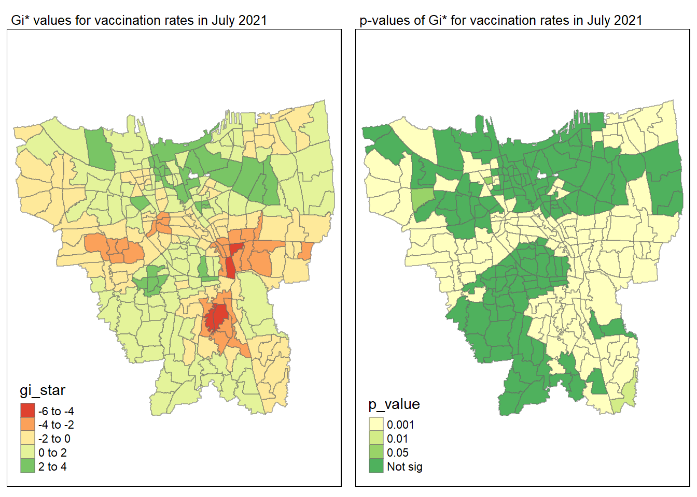
tmap_mode("plot")
gi_value_plot("2021-08-31", "August 2021")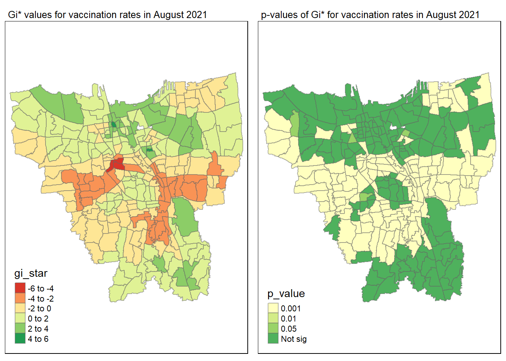
tmap_mode("plot")
gi_value_plot("2021-09-30", "September 2021")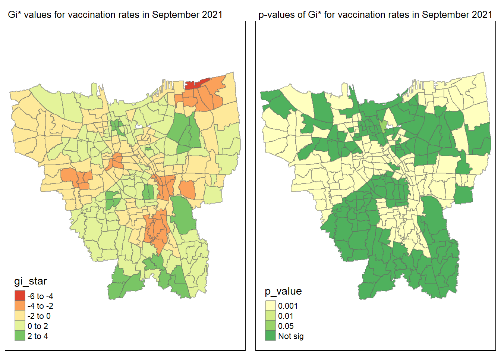
tmap_mode("plot")
gi_value_plot("2021-10-31", "October 2021")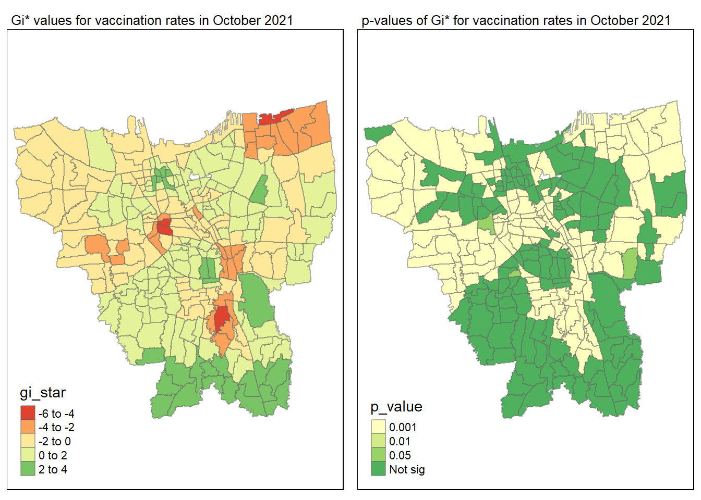
tmap_mode("plot")
gi_value_plot("2021-11-30", "November 2021")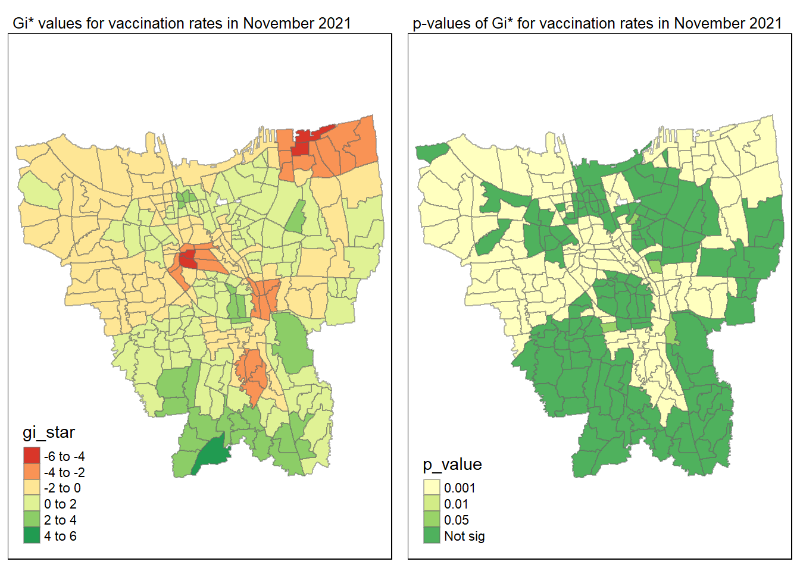
tmap_mode("plot")
gi_value_plot("2021-12-31", "December 2021")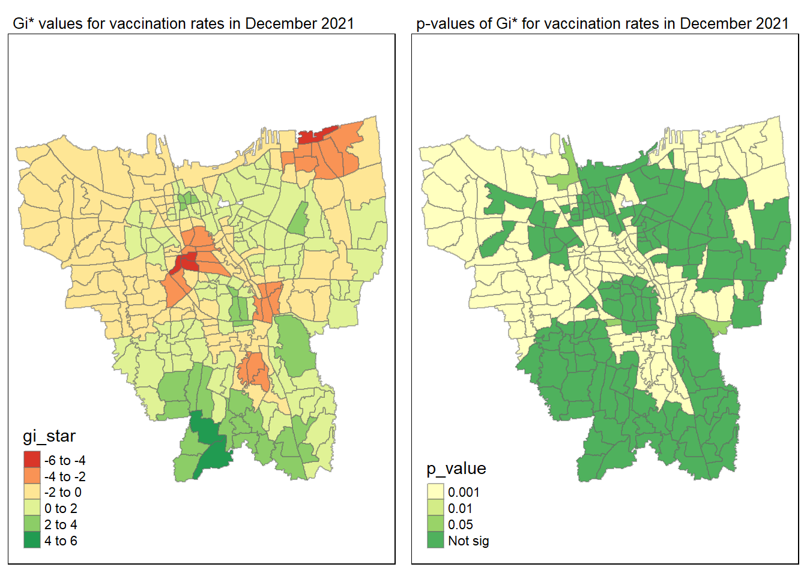
tmap_mode("plot")
gi_value_plot("2022-01-31", "January 2022")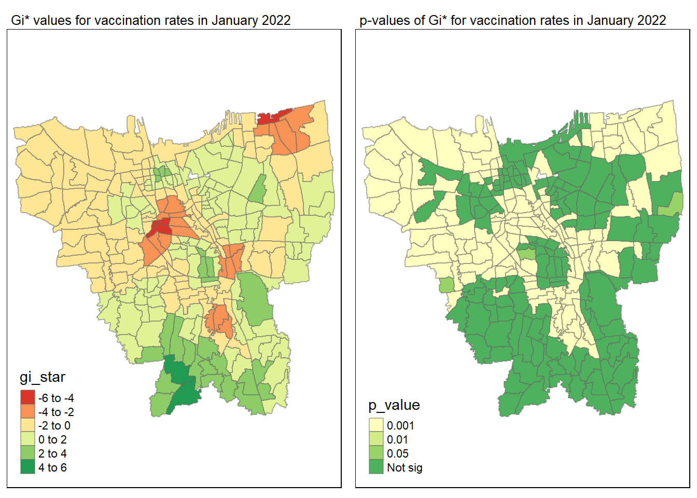
tmap_mode("plot")
gi_value_plot("2022-02-27", "February 2022")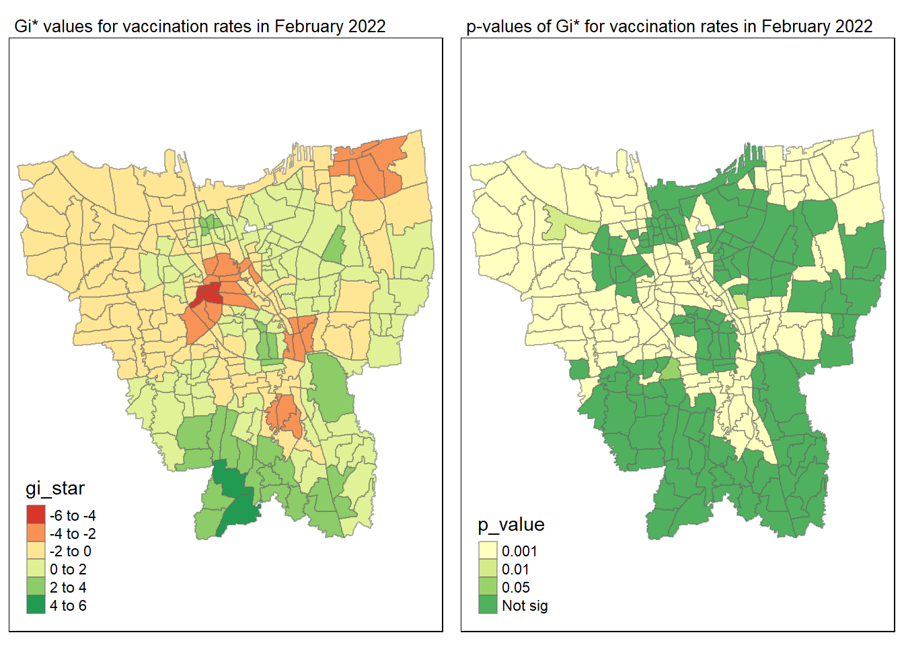
tmap_mode("plot")
gi_value_plot("2022-03-31", "March 2022")tmap_mode("plot")
gi_value_plot("2022-04-30", "April 2022")tmap_mode("plot")
gi_value_plot("2022-05-31", "May 2022")tmap_mode("plot")
gi_value_plot("2022-06-30", "June 2022")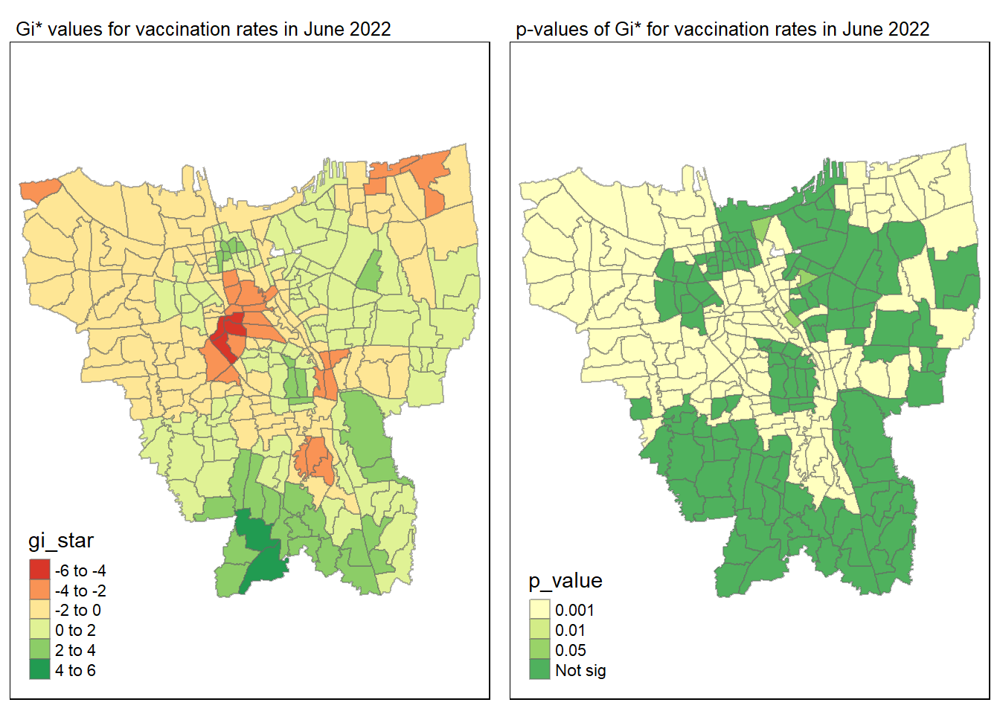
Statistical conclusion
The p-value represents the probability of observing a clustering. A significant p-value < 0.05 suggests that an observed pattern is unlikely to have occurred by chance and may indicate the presence of a spatial process. When Gi* value > 0, it indicates sub-districts with a higher vaccination rate than average. We can view the number of sub districts with p-value < 0.05 with the code below
no_of_subdistricts_freq = filter(jakarta_gi_values, p_sim < 0.05)
as.data.frame(table(no_of_subdistricts_freq$Sub_District)) Var1 Freq
1 ANCOL 2
2 BALE KAMBANG 3
3 BALI MESTER 7
4 BARU 8
5 BATU AMPAR 12
6 BENDUNGAN HILIR 10
7 BIDARA CINA 4
8 CEMPAKA PUTIH BARAT 1
9 CIGANJUR 9
10 CIJANTUNG 9
11 CIKINI 7
12 CIKOKO 2
13 CILANDAK TIMUR 3
14 CILILITAN 3
15 CILINCING 9
16 CIPAYUNG 1
17 CIPEDAK 9
18 CIPINANG BESAR SELATAN 2
19 CIPINANG BESAR UTARA 5
20 CIPINANG CEMPEDAK 12
21 CIPINANG MUARA 1
22 GALUR 1
23 GAMBIR 4
24 GEDONG 6
25 GELORA 7
26 GLODOK 4
27 GONDANGDIA 5
28 GROGOL SELATAN 1
29 GROGOL UTARA 1
30 GUNUNG SAHARI SELATAN 2
31 JAGAKARSA 9
32 JATINEGARA KAUM 1
33 KALISARI 7
34 KAMAL 1
35 KAMAL MUARA 3
36 KAMPUNG BALI 10
37 KAMPUNG RAWA 1
38 KAMPUNG TENGAH 4
39 KAPUK 2
40 KARET TENGSIN 8
41 KARTINI 1
42 KEAGUNGAN 12
43 KEBAGUSAN 7
44 KEBON KACANG 12
45 KEBON MELATI 11
46 KEBON SIRIH 8
47 KELAPA DUA 4
48 KELAPA DUA WETAN 3
49 KELAPA GADING TIMUR 1
50 KLENDER 2
51 KRAMAT JATI 3
52 KRAMAT PELA 1
53 LAGOA 6
54 LENTENG AGUNG 10
55 MALAKA SARI 2
56 MANGGA BESAR 12
57 MANGGARAI SELATAN 4
58 MAPHAR 3
59 MELAWAI 2
60 MENTENG 9
61 MENTENG DALAM 1
62 MUNJUL 9
63 PEJAGALAN 1
64 PEJATEN TIMUR 1
65 PEKAYON 3
66 PEKOJAN 1
67 PENJARINGAN 2
68 PETAMBURAN 9
69 PETOGOGAN 2
70 PINANG RANTI 11
71 PISANGAN BARU 1
72 PISANGAN TIMUR 2
73 PONDOK BAMBU 2
74 PONDOK KELAPA 1
75 PONDOK LABU 4
76 PONDOK RANGGON 1
77 PULO GADUNG 12
78 RAWA BADAK UTARA 4
79 RAWA BUNGA 5
80 ROROTAN 1
81 SEMPER BARAT 10
82 SEMPER TIMUR 9
83 SENAYAN 2
84 SETU 1
85 SLIPI 1
86 SRENGSENG SAWAH 9
87 SUKABUMI SELATAN 3
88 SUKAPURA 1
89 TAMBORA 1
90 TANAH SEREAL 1
91 TANAH TINGGI 1
92 TANGKI 3
93 TEBET BARAT 9
94 TEBET TIMUR 3
95 TEGAL ALUR 1
96 TUGU UTARA 2
97 ULUJAMI 1From the table above, there are 128 sub-districts who have a significant vaccination rate p-value < 0.05 at least once during the period of 12 months. Those sub-districts that have double digits frequency have a significant p value throughout the entire 12 months.
7. Emerging Hot Spot Analysis (EHSA)
Emerging Hot Spot Analysis (EHSA) is a spatio-temporal analysis method for revealing and describing how hot spot and cold spot areas evolve over time. Previously we have already built a space-time cube and calculated the Gi. Therefore, we can directly conduct the Mann-Kendall trend test to evaluate 3 sub-districts for a trend. The 3 sub-districts chosen would be HALIM PERDANA KUSUMAH, TUGU UTARA and ULUJAMI.
7.1 Mann-Kendall Test
7.1.1 HALIM PERDANA KUSUMAH
halim <- gi_values |>
ungroup() |>
filter(Sub_District == "HALIM PERDANA KUSUMAH") |>
select(Sub_District, Date, gi_star)Plotting the result by using ggplotly
p <- ggplot(data = halim,
aes(x = Date,
y = gi_star)) +
geom_line() +
theme_light()
ggplotly(p)halim %>%
summarise(mk = list(
unclass(
Kendall::MannKendall(gi_star)))) %>%
tidyr::unnest_wider(mk)# A tibble: 1 x 5
tau sl S D varS
<dbl> <dbl> <dbl> <dbl> <dbl>
1 0.909 0.0000521 60 66.0 213.The p-value is 0.086 which is > 0.05 hence p-value is not significant. Therefore, this is an upward but insignificant trend.
7.1.2 TUGU UTARA
tugu <- gi_values |>
ungroup() |>
filter(Sub_District == "TUGU UTARA") |>
select(Sub_District, Date, gi_star)Plotting the result by using ggplotly
p <- ggplot(data = tugu,
aes(x = Date,
y = gi_star)) +
geom_line() +
theme_light()
ggplotly(p)tugu %>%
summarise(mk = list(
unclass(
Kendall::MannKendall(gi_star)))) %>%
tidyr::unnest_wider(mk)# A tibble: 1 x 5
tau sl S D varS
<dbl> <dbl> <dbl> <dbl> <dbl>
1 0.364 0.115 24 66.0 213.The p-value is 0.149 which is > 0.05 hence p-value is not significant. Initially, the line chart is a downtrend but from January 2022 onward it begins its upward trend but it is still insignificant.
7.1.3 ULUJAMI
ulujami <- gi_values |>
ungroup() |>
filter(Sub_District == "ULUJAMI") |>
select(Sub_District, Date, gi_star)Plotting the result by using ggplotly
p <- ggplot(data = ulujami,
aes(x = Date,
y = gi_star)) +
geom_line() +
theme_light()
ggplotly(p)ulujami %>%
summarise(mk = list(
unclass(
Kendall::MannKendall(gi_star)))) %>%
tidyr::unnest_wider(mk)# A tibble: 1 x 5
tau sl S D varS
<dbl> <dbl> <dbl> <dbl> <dbl>
1 0.848 0.000162 56 66.0 213.The p-value is 0.003 which is < 0.05 hence p-value is significant. Therefore, this is an upward but significant trend.
7.2 EHSA map of the Gi* value
For us to find the significant hot and cold spots, there is a need to conduct the Mann Kendall test on all the subdistricts out there. Therefore, the group_by() function will be used for all subdistricts.
ehsa <- gi_values %>%
group_by(Sub_District) %>%
summarise(mk = list(
unclass(
Kendall::MannKendall(gi_star)))) %>%
tidyr::unnest_wider(mk)Show significant top 10 emerging hot/cold spots area
emerging <- ehsa %>%
arrange(sl, abs(tau)) %>%
slice(1:10)
emerging# A tibble: 10 x 6
Sub_District tau sl S D varS
<chr> <dbl> <dbl> <dbl> <dbl> <dbl>
1 KEMBANGAN UTARA -1.00 0.00000830 -66 66.0 213.
2 PASAR BARU -1.00 0.00000830 -66 66.0 213.
3 CIPINANG MUARA 1.00 0.00000834 66 66.0 213.
4 KAMPUNG MELAYU 1.00 0.00000834 66 66.0 213.
5 MANGGARAI 1.00 0.00000834 66 66.0 213.
6 PISANGAN BARU 1.00 0.00000834 66 66.0 213.
7 UTAN KAYU SELATAN 1.00 0.00000834 66 66.0 213.
8 GAMBIR -0.970 0.0000156 -64 66.0 213.
9 KAMAL -0.970 0.0000156 -64 66.0 213.
10 KAMAL MUARA -0.970 0.0000156 -64 66.0 213.emerging_hotspot_analysis() of sfdep package will be used to perform EHSA analysis. It takes a spacetime object x (i.e. vaccination_rate_st), and the quoted name of the variable of interest (i.e. Vaccinaton Rate) for .var argument. The k argument is used to specify the number of time lags which is set to 1 by default.
ehsa <- emerging_hotspot_analysis(
x = vaccination_rate_st,
.var = "Vaccination_Rate",
k = 1,
nsim = 99
)Visualisation of distribution
ggplot(data = ehsa,
aes(x=classification, fill=classification)) +
geom_bar()
The barchart above shows that sporadic hot spots class has the highest numbers.
Left join of combine jakarta and ehsa together
jakarta_ehsa <- bd_jakarta %>%
left_join(ehsa, by = c("Sub_District" = "location"))Visualisation of classification using tmap
# We use the filter to filter out values with p-value < 0.05
jakarta_ehsa_sig <- jakarta_ehsa %>%
filter(p_value < 0.05)
tmap_mode("plot")
tm_shape(jakarta_ehsa) +
tm_polygons() +
tm_borders(alpha = 0.5) +
tm_shape(jakarta_ehsa_sig) +
tm_fill("classification") +
tm_borders(alpha = 0.4)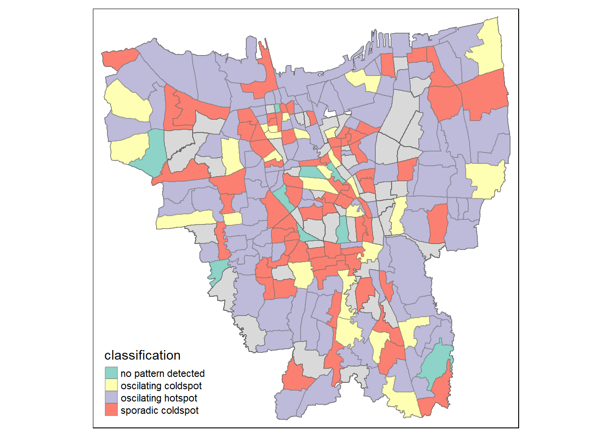
The maps shows spordiac coldspot is spread evenly out in Jakarta. For oscillating hotspot it is lesser than spordiac coldspot. Oscilating coldspot can be found to be more around the border and in the central of Jakarta. There is also a large number of oscilating hotspot spread out evenly around Jakarta. From the map, there is no obvious pattern and lastly, sub districts shaded in grey are of p value > 0.05 which represents that the sub districts are insignificant.
End of take home exercise 2
*Note to Professor*
Some of the code chunks above are referenced from
Megan’s IS415 Journey https://is415-msty.netlify.app/posts/2021-09-10-take-home-exercise-1/
Professor In Class Exercises 7 https://is415-gaa-tskam.netlify.app/in-class_ex/in-class_ex07/in-class_ex07-glsa and https://is415-gaa-tskam.netlify.app/in-class_ex/in-class_ex07/in-class_ex07_ehsa